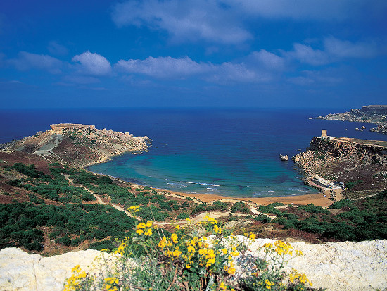

{extends file="tour2.html"}
{block name="page_tag"}
СИЦИЛИЯ
{/block}
{block name="tour_name"}
Новогодняя Мальта. 29 декабря 2014 - 2 января 2015 года.
Новогодняя Сицилия. 2-10 января 2015 года.
{/block}
{block name="page_center"}
Новый год на Мальте и поход по Сицилии
- Где можно провести январские праздники? Один из вариантов
провести Новый Год спортивно, без суеты, покататься на велосипеде,
погреться на солнце - перед вами. Конечно, на большую жару расчитывать
не стоит. Да и в море могут купаться только самые отъявленные любители
холодной воды. Но для катания на велосипеде погода будет хороша! В +18
крутить педали намного приятнее, чем в +30.
- Кстати, вы знаете, где находится эта самая Мальта? Лучше
всего ее на карте искать отталкиваясь от Африканского побережья. Ищете
Тунис, его одноименную столицу. От него вправо, на восток, проводите
линию, и ЮЖНЕЕ этой линии оказывается остров Мальта. Да, Мальта, если
смотреть географически, южнее многих африканских городов. Но климат
Мальты и Сицилии намного прохладнее, так как со всех сторон омывает эти
острова море...
На что еще не стоит расчитывать, это на массовые гуляния и фейерверки.
Новый Год в Европе совсем не похож на наш. Это домашний
праздник.
Что, впрочем, весьма и не плохо.
- Итак, наш план такой. Велопоход по Сицилии начнется 2
января. И те, кто любит встречать этот праздник дома, в кругу семьи,
смогут это сделать, прилетев к нам 2 января. Те же, кто наоборот, любят
уехать куда-нибудь далеко, для тех будет велосипедно-новогодняя
программа на Мальте, которая начнется с 29 декабря. Мы покатаемся по
Мальте, встретим Новый Год, и, затем, вернемся на Сицилию морским
паромом и присоединимся... нет! Не присоединимся, а возглавим поход по
Сицилии, с теми, кто прилетит 2 января.
-
- Итак, план
"Мальта":
- 29 декабря
прибытие на Мальту и размещение в гостинице. На Мальте мы будем жить в
одном месте все дни, и ездить по острову радиальными выездами. Но
машина будет при нас. Кому удобно - может прилететь прямо на Мальту
самолетом. Кому нет - можно прилететь на Сицилию накануне, и ехать на
Мальту морским паромом вместе с гидами. На фото ниже - морское побережье Мальты

- 30 декабря.
50 км. Этот день мы посвятим катанию по южной части Мальты, и посетим
два города вдали от моря. Это Рабат и Мдина. В Мдине, вероятно, надо
посмотреть музей, в котором гиды Велотура смогут повышать свою
квалификацию. Это музей пыток. Здесь собраны различные дыбы и другие не
менее страшные приспособления средневековья, применявшиеся для.... для
чего? Ну, вероятно, для мотивации личного состава к порядку и хорошему
поведению. Также мы доберемся до Южного берега Мальты, и посмотрим, не
видна ли на горизонте Африка? Не исключен заезд и в катакомбы святого
Павла. По легенде, название не случайное. Он именно тут проповедовал.
Посетим мы также и Голубую лагуну - краивый залив с лазурной водой.
- 31 декабря.
Каждый год,
31 декабря мы с друзьями... катаемся на велосипеде. В самом деле, зачем
нам баня? Есть море. Вот восточный берег Мальты мы и будем исследовать
в этот день. Поедем по рыбацким деревням, может быть, увидим рыбный
рынок. Увидим маяки, скалы. И вернемся не поздно. Вечером —
праздник. Как будем проводить праздник — решим на всеобщем
собрании.Нас будет от 8 до 14 человек. Принципиально есть три варианта.
Первый — пойти в
ресторан. Мне не очень нравится. Второй — устроить посиделки
своими силами в отеле. Это кажется интереснее, но есть еще вариант.
Попробовать найти некий уединенный и недалекий от отеля пляж, и
отпраздновать там. На берегу моря. Под звездами. С бутлочкой
итальянского игристого... Это, впрочем, решим по месту. Ради
этого я, известный тиран и деспот, допущу в группе демократию. Обсудим,
немного поругаемся, подеремся, и выберем вариант ко всеобщей радости.
- 1 января.
День отдыха. Отдыхать можно по-разному. Можно уделить внимание
рыцарской Валетте, погуляв по ней пешком. А можно устремится на
велосипедах на остров Гоцо, для чего придется встать не поздно. Ведь,
чтобы посетить Гоцо, необходимо проехать только по Мальте 24 км до
парома, и столько же обратно. Но тут каждый выберет сам.
- 2 января.
Мы переезжаем на Сицилию, в город Катанию, где встречаем прибывающих в аэропорт с чудесным названием Фонтанаросса
будущих покорителей Сицилии.
-
План
"Сицилия".
Это - независимый план, на который вы можете
заявиться отдельно от Мальты и прилететь в Катанию 2 января.
Катанья – Мессина- Милаццо – Капо Орландо
– Чефалу - Палермо
Общее описание маршрута
Мы проедем по побережью Ионического и
Тирренского
морей – самым живописным на Сицилии. Хотя маршрут нельзя
назвать
горным (в смысле многокилометровых перевалов), короткие крутые взлеты
нередки. Мы рассчитываем на относительно короткие дни – 50-
65 км, с тем, чтобы вторую половину дня проводить в осмотрах
достопримечательностей городов. Прибрежная полоса Сицилии очень густо
населена. Дорога вьется сквозь длинный ряд маленьких городков. Не
следует ждать езды по пустынным дорогам сквозь леса и поля. Леса
встречаются у подножья Этны или в национальных
парках. Дороги нешироки, водители ездят виртуозно и эмоционально,
велосипедные дорожки не встречаются.
Начало маршрута – город
Катания. Велосипедная часть маршрута заканчивается в Палермо, откуда
самолеты в Рим летают каждых час.
Что же касается известной на весь мир
Сицилийской
мафии, то всего несколько десятков лет назад ситуация была почти такой,
как в знаменитом "Крестном отце". Но последние десятилетия резко
изменили ситуацию: прокурору Фальконе удалось закончить уголовный
процесс над главами мафиозных кланов, их осуждением и помещением в
карцер, в 90-х гг. мэр Палермо Орландо провел ряд реформ, направленных
против мафиозных воротил, стоящих у городской власти. И
теперь Сицилия -
это достаточно
безопасное место, как для жителей, так и для туристов. Кстати, на
данный момент уровень преступности на Сицилии значительно ниже, чем в
материковой Италии .
Итак, в путь.
День 1 Катания. 2 января 2015 года
Прибытие в аэропорт Фонтанаросса, Катанья.
Сегодня - не велосипедный день. Приезжаем, (кто с Мальты, а кто и из
России), размещаемся в отеле, и гуляем по городу.
Катания – город
черного слона (фонтан с
черным слоном стал визитной карточкой города) - двулик. Здесь шик
античного барокко соседствует с серыми новостройками, шикарные виллы
17-19 вв. - с убогими жилыми постройками, прекрасный ботанический сад,
обещающий прохладу под тенью многолетних пальм и фикусов, и серые
кирпичные улицы без единого деревца, старенькие потрепанные Фиаты
соседствуют с Феррари и Ламборгини...
В 729 г. до н.э. x алкидонцы с острова
Наксос
бросили якорь в одном из заливов Сицилии и заложили здесь
поселение… но город четырежды подвергался землетрясениям и
трижды покрывался лавой, извергаемой соседкой Этной. Соответственно
облик города полностью менялся 5 раз. В 18 вв. Джованни Баттиста
Ваккарини, житель Палермо, выиграл конкурс и реализовал свой проект
барочного черного города из лавы и базальта - он перестроил (точнее,
выстроил заново) Катанию в барочном стиле, с
прямыми
улицами, выводящим к просторным площадям.
 Те,
кто архитектуре предпочитает природу, смогут в этот день подняться по
канатной дороге на смотровую площадку на вулкане Этна. Вид оттуда
завораживающий. Этна не раз подвергала испытаниям жителей городка. Это
- действующий вулкан. Во время похода 2012 года, он даже немного
"дымил". Но местные жители привычны к чудачествам Этны. Утром мы
проснулись под шаркающие звуки. Это дворник метлой рутинно смахивал
небольшой слой вулканического пепла с улиц. Пепел вулкана на совок - и
в мусорный бак. Обычное дело...
Те,
кто архитектуре предпочитает природу, смогут в этот день подняться по
канатной дороге на смотровую площадку на вулкане Этна. Вид оттуда
завораживающий. Этна не раз подвергала испытаниям жителей городка. Это
- действующий вулкан. Во время похода 2012 года, он даже немного
"дымил". Но местные жители привычны к чудачествам Этны. Утром мы
проснулись под шаркающие звуки. Это дворник метлой рутинно смахивал
небольшой слой вулканического пепла с улиц. Пепел вулкана на совок - и
в мусорный бак. Обычное дело...
Этна - это один из самых "добрых" вулканов. Она извергает
лаву понемногу и все больше в сторону "зарезервированную" для
этого (где нет
никаких поселений). Конечно, случалось за тысячелетия, что вулкан
гневался, и лава доходила аж до моря. Но одна из особенностей лавы Этны
в том, что движется она очень медленно, поэтому человеческих жертв не
было. Зато города наполовину (в лучшем случае) бывали разрушены.
Впрочем, случалось это редко, а блага, которые предлагает вулкан своим
обитателям - постоянны: земля вулкана настолько богата различными
минералами и полезными веществами, что на его склонах выращивают все,
что только можно, начиная от фисташек в высоких точках и заканчивая
красными апельсинами у подножия.
От Катании до Этны можно
добраться по дороге до местечка Рифуджо Сапиенца - это некое плато,
созданное для туристов - здесь есть канатная дорога для подъема к
вершинам и экскурсии к действующему кратеру - для любителей остренького.
Вблизи нашей ночевки есть пляж Фондачелло (не путать с аэропортом
Фонтанаросса). Для любителей холодной январской воды можно
порекомендовать купание.
День 2 . Катанья
– Таормина 55 km. 3 января 2015
года.
Весь день едем вдоль
восточного
побережья Сицилии, и приезжаем в очаровательный городок Таормина.
Это типичная южная Италия. Узкие улицы,
извилистые и
непредсказуемые, домики, крыши и колорит местных
жителей..
Город располагается у бухты, которая ограничена с двух сторон мысами,
вдающимися в море. Красивое место. Суммируя процитируем путеводитель:
"Таормина-
это город-легенда - самый знаменитый сицилийский курорт.
Город словно утопает в зелени, невысокие античные дома главных улиц,
мощеные камнем дорожки, красивейшие пляжи с изумрудным морем, плюс
различные мелочи - создают атмосферу спокойствия и умиротворенности."
Не плохо. Нам ли жителям мегаполисов, не скучать по "атмосфере
спокойствия и умиротворенности"?
День 3. Таормина
– Мессина ( Messina ) 57 км. 4
января.
Сегодня – самый живописный
день. Три дороги
(автомагистраль, железная и автодорога) узкой полосой прорезают скалы,
а внизу – изрезанный бухтами берег. Ехать тут не
скучно.
Всего пять километров отделяют Мессину
от
материковой части страны, что придает особую важность порту города. А
потому история Мессины неразрывно связана с морем и проливом, который
носит то же название и который, согласно легенде, охраняли два ужасных
чудовища — Сцилла и Харибда. Сцилла — это дочь
Форкиса и
Гекаты, о ней говорили, что у нее двенадцать ног и шесть собачьих
голов, и что она живет под утесом со стороны материка. Именно она
напала на корабль Улисса, схватив шесть его моряков. По другую сторону
пролива, со стороны Сицилии, жила Харибда, (возможно, в нашем отеле,
или где-то рядом с ним) которая всасывала в себя морскую воду, поглощая
вместе
с ней корабль.
Кстати, и сегодня водовороты вызванные деятельностью Харибды вполне
можно увидеть в проливе. Так что, за буйки не заплывайте. Впрочем, вода
не будет теплой. Коренной берег Италии хорошо виден. Можете оценить,
похож он на сапог или нет. Иначе слова "Видал я ту Италию, сапог -
сапогом" останутся не подтвержденными.
День 4. Мессина- Милаццо (Milazzo)
55 km. 5 января
Выехав из Мессины, мы огибаем узкий мыс
у пролива,
отделяющего нас от континента – знаменитую Харибду - Torre
del
Faro , и двигаемся на запад, то взбираясь на невысокие отроги
прибрежных скал, то спускаясь к морю. К концу дня мы попадаем на узкую
косу Милаццо.
По преданию, у Милаццо потерпел крушение Одиссей и встретился
с
циклопами. Проверить это трудно, ранее циклопы в этом месте нам не
встречались. А вот Гарибальди точно здесь одержал свои решающие победы,
а норманны оставили свой след в виде крепости. К северу от нашей
гостиницы располагается длинный узкий мыс... Красивое место. Можно туда
сходить на прогулку.
День 5 . Милаццо-Тиндари
65 km. 6 января
Сегодня нас ждет небольшой подъем к селению Тиндари.
Давным-давно это было… К
берегам Сицилии,
прямо здесь у скалы Тиндари, бурей прибило чужеземный корабль. Когда
море утихло, капитан дал приказ отплывать. Но корабль не двигался с
места - словно бы две невидимых руки держали его.
«Убрать
лишний груз!» - велел капитан. Один за другим стаскивали
матросы
на берег тяжелые тюки, но корабль не двигался с места. И только когда
последний запыленный ящик из дальнего уголка трюма оказался на берегу,
корабль смог отплыть. Птицей он полетел по волнам и скрылся за
горизонтом. В ящике же нашли чудотворный образ Черной Мадонны
–
тот, что сейчас в Храме. Интересно, что в Тиндари и в храм
Черной Мадонны мы прибудем как раз на Православное Рождество - 6
января.
По соседству, в
цветущем парке высоко над морем, – небольшой археологический
заповедник. Сюда приезжают полюбоваться пейзажами, побродить по
живописным развалинам древнего города, послушать ветер. Ветер здесь
особенный: ведь в море напротив Тиндари лежит Липарский архипелаг
– древний дом бога ветров Эола… Надеемся, он будет
дуть во
время нашего маршрута нам в спину.
День 6. Капо Орландо – Санта Агата
50 km 7 января.
Продолжается наш путь по живописной
прибрежной дороге через небольшие городки. Один из них Santa
Stephano di C-а
mastra –
знаменит своим керамическим производством. Едем,
как всегда, вдоль моря. Море, кстати, обеспечивает местных жителей
свежей рыбой, которая в местных ресторанах имеет превосходный вкус.
Сразу видно, что рыба эта только что плескалась в море, а не ехала
в замороженном виде два месяца в рефрижераторе.
День 7. Санта Агата - Чефалу 65
km 8 января.
Двигаясь вдоль моря, к концу дня мы увидим огромную скалу,
выдающуюся в море. Поселение у
основания 376-метрового уступа существовало ещё в глубокой древности.
Впервые Чефалу он был упомянут в 395 году
до н. э. как
союзник Карфагена. В III веке до н. э.
отошёл к
римлянам.
Современный город обязан своим
основанием
королю Рожеру II, который в 1131 году заложил
трехнефный собор, выделяющийся среди окружающей застройки своими
четырёхъярусными романскими башнями. После обновлений XVI и XVII веков
в интерьере собора уцелело лишь несколько византийских мозаик
XII века, из которых первое место во всей Сицилии принадлежит
грациозному изображению Христа Пантократора в
центральной
апсиде. Город вообще богат памятниками старины, большинство из которых
было возведено в XVI веке и позднее.
День 8 Чефалу.
Радиалка (а для кого и дневка) в Кастельбуоно. 9 января.
Сегодня мы
задержимся в Чефалу.
Кого-то ждет чудесный пляж у гостиницы или пеший поход на скалу,
желающих – горный заезд в городок Кастельбуоно и национальных
парк Мадони.
Небольшой город Кастельбуоно, смело
можно назвать
городом-легендой. Именно в Кастельбуоно находится огромное количество
памятников старины, замков и просто интересных достопримечательностей,
но, пожалуй, одной из главных достопримечательностей Кастельбуоно
– это парк "Мадони", расположенный у подножья одноименной
горы.
Он представляет из себя национальный заповедник с нетронутой природой,
и является одним из самых крупных заповедников Сицилии.
Территория этого парка огромна, ведь
кроме лесов и
гор на его территории находится около 15 различных деревушек (например,
Gratelli , Isnello ), каждая из которых может похвастаться каким-либо
храмом или замком эпохи средневековья.
День 9 . Чефалу -
Палермо 70km. 10 января.
Последний бросок по побережью через все более частые городки,
и вот мы в Палермо.
Палермо – это многочисленные
церкви, прекрасные сады, норманские и арабские памятники архитектуры и
великолепное море.
Можно посетить местный рынок (точнее его "рыбную часть") - Вуччерия (по
утрам на пересечении Виа Рома и Виа Витторио Эммануэле) и гору
Пеллегрино, откуда помимо прекрасного вида на Палермо, находятся
пещеры, сохранившие наскальные рисунки каменного века.
День 10 Отлет. 11 января.
Пора домой. К снегам. Сугробам. Хотя, конечно, если позволяет
жизнь,
то можно и задержаться тут еще на пару деньков. Заняться тут есть чем.
Палермо -
столица Сицилии. В отличие от
других городов Палермо был основан не греками, а
финикийцами (карфагенянами) в VIII в. до н. э. у подножья горы
Пеллегрино на берегу Тирренского моря, откуда и произошло название
Палермо - от "панормус" - порт (по-гречески).
Удобное
расположение оказало влияние на быстрое развитие города.
Здесь есть что посмотреть, и куда съездить. Например
в Monreale. Это –
уникальный «мозаичный» городок, расположенный в 7
км от
Палермо при движении из центра по Corso Catalafimi на юго-запад. В этом
месте норманнский король Вильгельм II приказал воздвигнуть грандиозный
Кафедральный собор ( Duomo di Santa Maria
La Nuova )
после видения ему Божьей Матери. Собор был построен в 1174-76 гг. и
представлял собой гигантское сооружение: 106 м в длину и 40 м в ширину.
Над проектом работали арабские архитекторы, придавшие ему стиль,
применяемый при строительстве мавританских дворцов. Впечатляет и
мозаичное изображение Христа Пантократора, длина руки которого
достигает 2 м. Удивителен факт, что в Кафедральном соборе есть
изображение Святой Троицы, хотя общеизвестно, что католичество не
признает Троицу. Недалеко от алтаря расположены королевские
усыпальницы, тут же в правом крыле сохранились остатки монастыря
бенедектинцев (XII в.). До наших дней великолепно сохранился
монастырский дворик, квадрат 47х47 м, представляющий собой 4 стены,
состоящие из колонн, соединенных арками в духе арабских дворов,
окружающих внутренний сад. Вокруг архитектурного ансамбля постепенно
сформировался город, куда Вильгельм II хотел перенести свой двор.
Заявиться можно на страинце календарь.
Порядок заявок такой: если вы хотите заявиться
на оба похода, то выбираете "Мальта - Сицилия". Если только на Сицилию,
ваш выбор - "Сицилия".
По стоимости: Стоимость
похода по Сицилии 1135 евро., Стоимость «Мальтийских
каникул» - 450 евро. В стоимость не входит паром с
Мальты на Сицилию (ок 100 евро).
Что включено?
1. Организация путешествия
2. Помощь в получении визы (ваучеры гостиниц и письмо клуба для тех,
кому необходима итальянская виза)
3. Трансферы в/из аэропорт
4. Все ночлеги (отели 2-3*)
5. Все завтраки (кроме дня прибытия)
6. Во все ходовые дни – ланч-пикник и
энергетическое питание
7. Машина сопровождения, перевозящая багаж участников и помогающая
уставшим участникам.
В эту сумму не входит:
1. Перелет на Сицилию и обратно
2. Итальянский консульский сбор и услуги визового центра
3. Медицинская страховка стоит около 1 Евро/день.
4. Все ужины. По вечерам можно будет либо отправиться в какое-нибудь
приятное место, или приготовить свой ужин (совместно или
самостоятельно)
5. Дневное питание на дневке.
6. Входная плата в музеи и т.п.
Подать заявку на участие
можно на странице календарь
{/block}